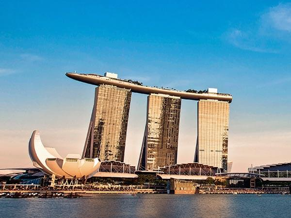

 Marina Bay is a bay located in the Central Area of Singapore surrounded by the perimeter of four other planning areas, the Downtown Core, Marina East, Marina South and Straits View. The area surrounding the bay itself, also called Marina Bay, is a 360 hectare extension to the adjacent Central Business District. It is also the new downtown of Singapore built on reclaimed land. Famous landmark iconic buildings include the Marina Bay Sands, Marina Bay Financial Centre, Asia Square, The Sail @ Marina Bay and Marina One integrated mixed-use developments. It is one of the key focus areas by the Urban Redevelopment Authority. Marina Bay is envisioned by the URA as a work-live-play vibrant 24 hour CBD. In 1969, land reclamation work to create 360 hectares of prime waterfront site began at Marina Bay. The reclaimed land forms what is today the Marina Centre and Marina South areas, and the reclamation work was completed in 1992. In the reclamation process, Telok Ayer Basin and Inner Roads was removed from the map by reclaiming land, while the Singapore River's mouth now flows into the bay instead of directly into the sea.
Singapore Page